BM（Boyer-Moore）算法。它是一种非常高效的字符串匹配算法，有实验统计，它的性能是著名的 KMP 算法的 3 到 4 倍。
BM 算法的核心思想
把模式串和主串的匹配过程，看作模式串在主串中不停地往后滑动。当遇到不匹配的字符时，BF 算法和 RK 算法的做法是，模式串往后滑动一位，然后从模式串的第一个字符开始重新匹配。可以看下面的这幅图。
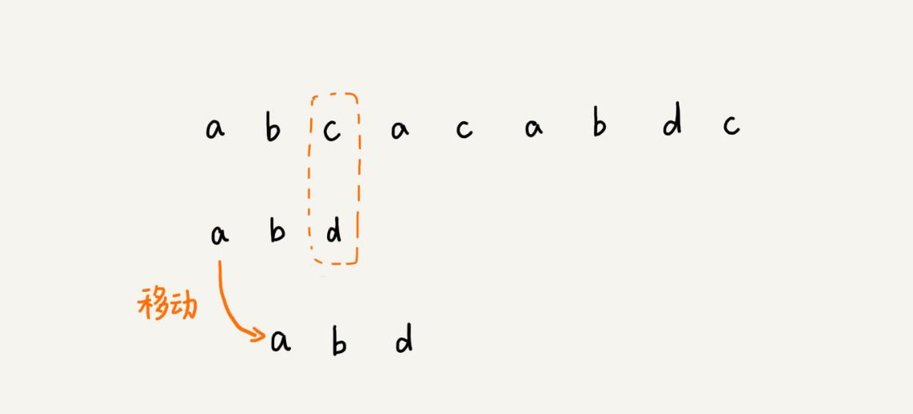
在这个例子里，主串中的
c，在模式串中是不存在的，所以，模式串向后滑动的时候，只要 c 与模式串有重合，肯定无法匹配。所以，可以一次性把模式串往后多滑动几位，把模式串移动到 c 的后面。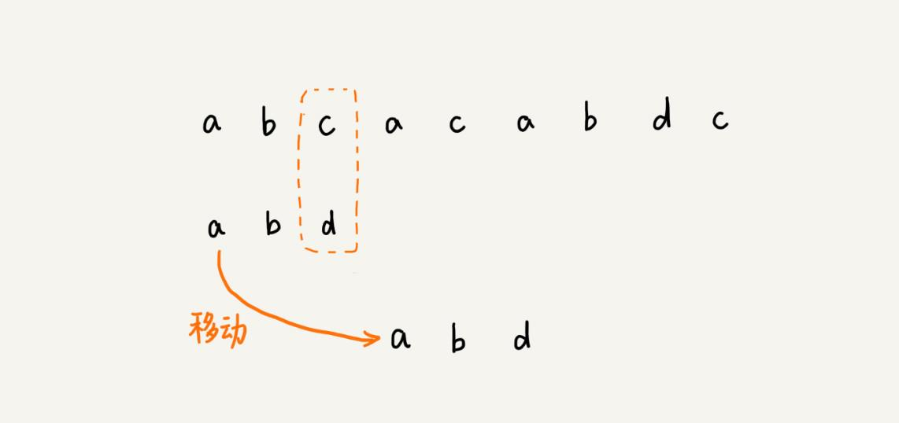
由现象找规律，思考一下，当遇到不匹配的字符时，有什么固定的规律，可以将模式串往后多滑动几位呢？这样一次性往后滑动好几位，那匹配的效率岂不是就提高了？
BM 算法，本质上其实就是在寻找这种规律。借助这种规律，在模式串与主串匹配的过程中，当模式串和主串某个字符不匹配的时候，能够跳过一些肯定不会匹配的情况，将模式串往后多滑动几位。
BM 算法原理分析
BM 算法包含两部分，分别是坏字符规则（bad character rule）和好后缀规则（good suffix shift）。下面依次来看，这两个规则分别都是怎么工作的。
1. 坏字符规则
在匹配的过程中，都是按模式串的下标从小到大的顺序，依次与主串中的字符进行匹配的。这种匹配顺序比较符合我们的思维习惯，而 BM 算法的匹配顺序比较特别，它是按照模式串下标从大到小的顺序，倒着匹配的。下面有一张图，你可以看下。
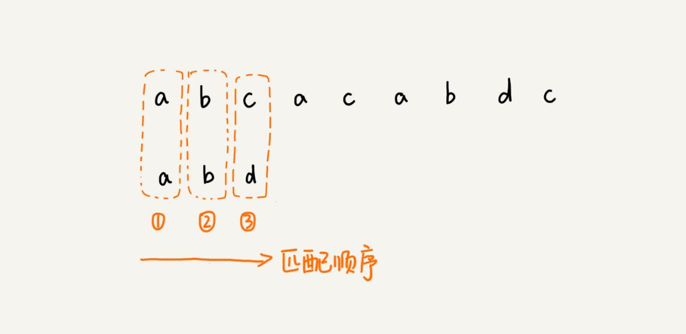
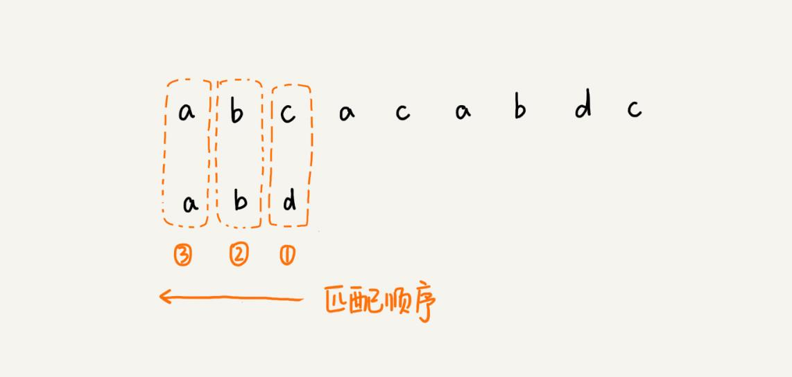
从模式串的末尾往前倒着匹配，当发现某个字符没法匹配的时候。把这个没有匹配的字符叫作坏字符（主串中的字符）。
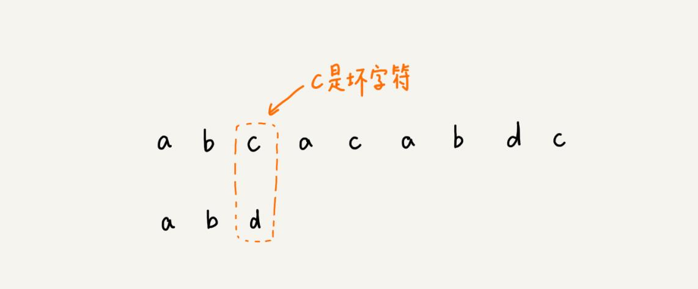
拿坏字符
c 在模式串中查找，发现模式串中并不存在这个字符，也就是说，字符 c 与模式串中的任何字符都不可能匹配。这个时候，可以将模式串直接往后滑动三位，将模式串滑动到 c 后面的位置，再从模式串的末尾字符开始比较。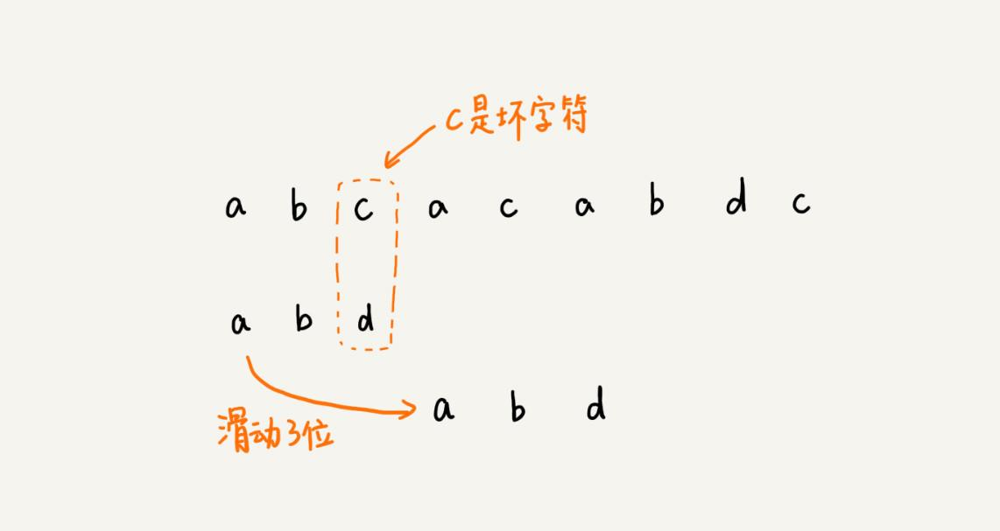
这个时候，模式串中最后一个字符
d，还是无法跟主串中的 a 匹配，这个时候，还能将模式串往后滑动三位吗？答案是不行的。因为这个时候，坏字符 a 在模式串中是存在的，模式串中下标是 0 的位置也是字符 a。这种情况下，可以将模式串往后滑动两位，让两个 a 上下对齐，然后再从模式串的末尾字符开始，重新匹配。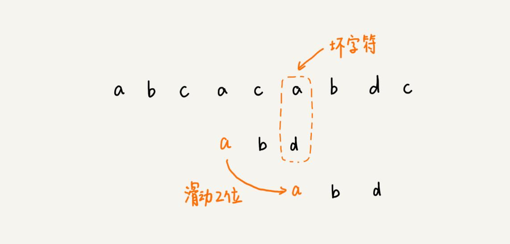
第一次不匹配的时候，滑动了三位，第二次不匹配的时候，将模式串后移两位，那具体滑动多少位，到底有没有规律呢？
当发生不匹配的时候，把坏字符对应的模式串中的字符下标记作 si。如果坏字符在模式串中存在，把这个坏字符在模式串中的下标记作 xi。如果不存在，把 xi 记作 -1。那模式串往后移动的位数就等于 si-xi。（注意，这里说的下标，都是字符在模式串的下标）。
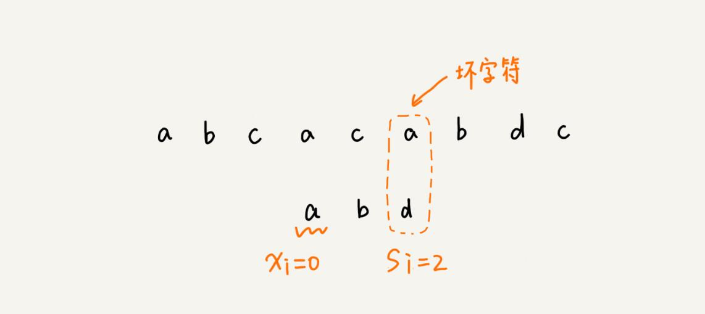
这里要特别说明一点，如果坏字符在模式串里多处出现，那在计算
xi 的时候，选择最靠后的那个，因为这样不会让模式串滑动过多，导致本来可能匹配的情况被滑动略过。
利用坏字符规则，BM 算法在最好情况下的时间复杂度非常低，是 $O(n/m)$。比如，主串是 aaabaaabaaabaaab，模式串是 aaaa。每次比对，模式串都可以直接后移四位，所以，匹配具有类似特点的模式串和主串的时候，BM 算法非常高效。
不过，单纯使用坏字符规则还是不够的。因为根据 si-xi 计算出来的移动位数，有可能是负数，比如主串是 aaaaaaaaaaaaaaaa，模式串是 baaa。不但不会向后滑动模式串，还有可能倒退。所以，BM 算法还需要用到“好后缀规则”。
2. 好后缀规则
好后缀规则实际上跟坏字符规则的思路很类似。可以看下面这幅图。当模式串滑动到图中的位置的时候，模式串和主串有 2 个字符是匹配的，倒数第 3 个字符发生了不匹配的情况。
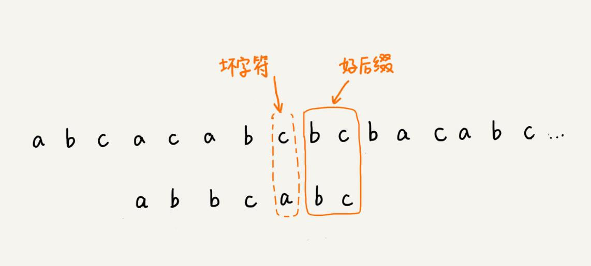
这个时候该如何滑动模式串呢？当然，还可以利用坏字符规则来计算模式串的滑动位数，不过，也可以使用好后缀处理规则。两种规则到底如何选择，下面会说明。抛开这个问题，现在来看，好后缀规则是怎么工作的？
把已经匹配的 bc 叫作好后缀，记作{u}。拿它在模式串中查找，如果找到了另一个跟{u}相匹配的子串{u*}，那就将模式串滑动到子串{u*}与主串中{u}对齐的位置。
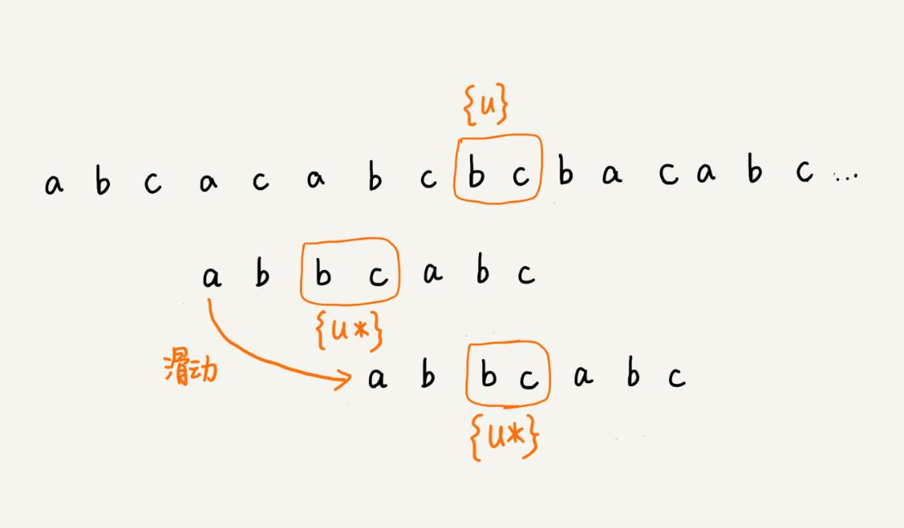
如果在模式串中找不到另一个等于
{u}的子串，就直接将模式串，滑动到主串中{u}的后面，因为之前的任何一次往后滑动，都没有匹配主串中{u}的情况。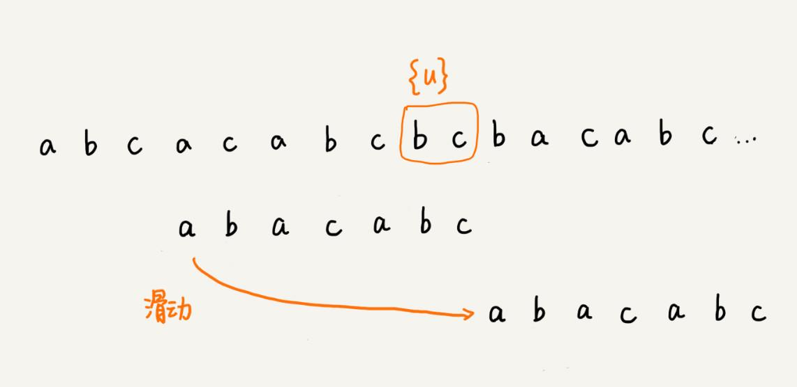
不过，当模式串中不存在等于
{u}的子串时，直接将模式串滑动到主串{u}的后面。这样做是否有点太过头呢？来看下面这个例子。这里面 bc 是好后缀，尽管在模式串中没有另外一个相匹配的子串{u*}，但是如果将模式串移动到好后缀的后面，如图所示，那就会错过模式串和主串可以匹配的情况。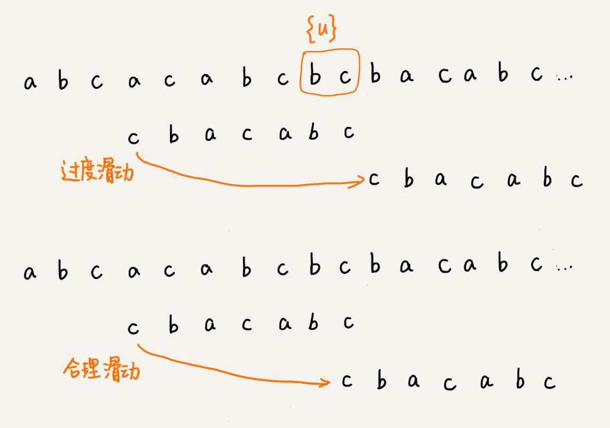
如果好后缀在模式串中不存在可匹配的子串，那在一步一步往后滑动模式串的过程中，只要主串中的
{u}与模式串有重合，那肯定就无法完全匹配。但是当模式串滑动到前缀与主串中{u}的后缀有部分重合的时候，并且重合的部分相等的时候，就有可能会存在完全匹配的情况。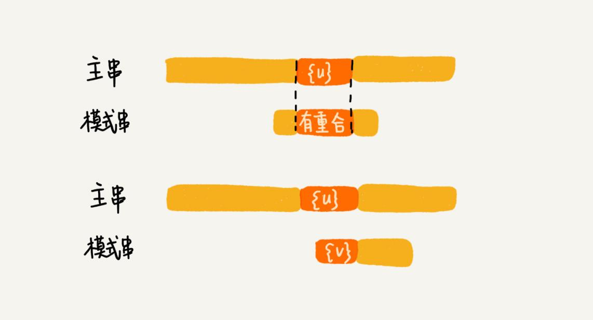
所以，针对这种情况，不仅要看好后缀在模式串中，是否有另一个匹配的子串，还要检查好后缀的后缀子串，是否存在跟模式串的前缀子串匹配的。
所谓某个字符串 s 的后缀子串，就是最后一个字符跟 s 对齐的子串，比如 abc 的后缀子串就包括 c, bc。所谓前缀子串，就是起始字符跟 s 对齐的子串，比如 abc 的前缀子串有 a，ab。从好后缀的后缀子串中，找一个最长的并且能跟模式串的前缀子串匹配的，假设是{v}，然后将模式串滑动到如图所示的位置。
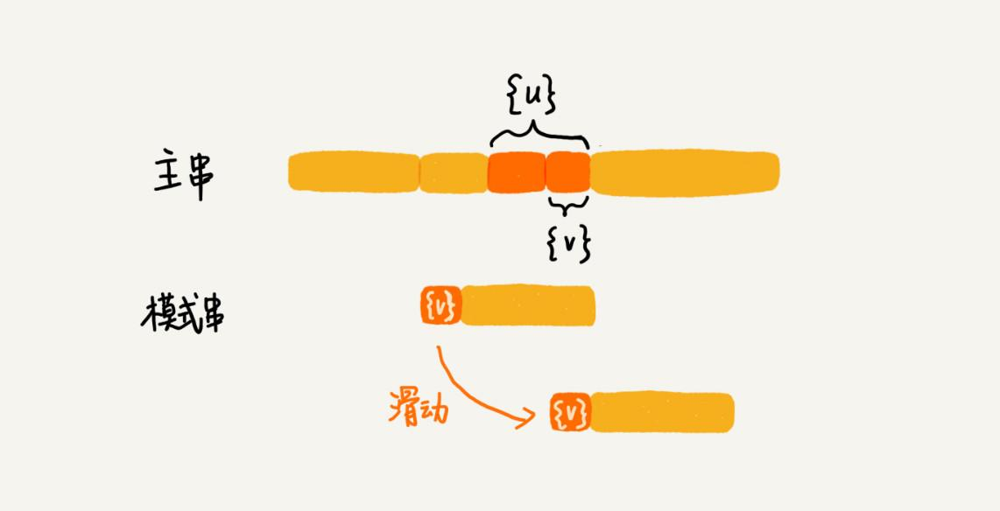
当模式串和主串中的某个字符不匹配的时候，如何选择用好后缀规则还是坏字符规则，来计算模式串往后滑动的位数？
可以分别计算好后缀和坏字符往后滑动的位数，然后取两个数中最大的，作为模式串往后滑动的位数。这种处理方法还可以避免前面提到的，根据坏字符规则，计算得到的往后滑动的位数，有可能是负数的情况。
BM 算法代码实现
“坏字符规则”本身不难理解。当遇到坏字符时，要计算往后移动的位数 si-xi，其中 xi 的计算是重点，如何求得 xi 呢？或者说，如何查找坏字符在模式串中出现的位置呢？
如果拿坏字符，在模式串中顺序遍历查找，这样就会比较低效，势必影响这个算法的性能。有没有更加高效的方式呢？之前讲的散列表，这里就可以派上用场了。可以将模式串中的每个字符及其下标都存到散列表中。这样就可以快速找到坏字符在模式串的位置下标了。
关于这个散列表，这里只实现一种最简单的情况，假设字符串的字符集不是很大，每个字符长度是 1 字节，用大小为 256 的数组，来记录每个字符在模式串中出现的位置。数组的下标对应字符的 ASCII 码值，数组中存储这个字符在模式串中出现的位置。
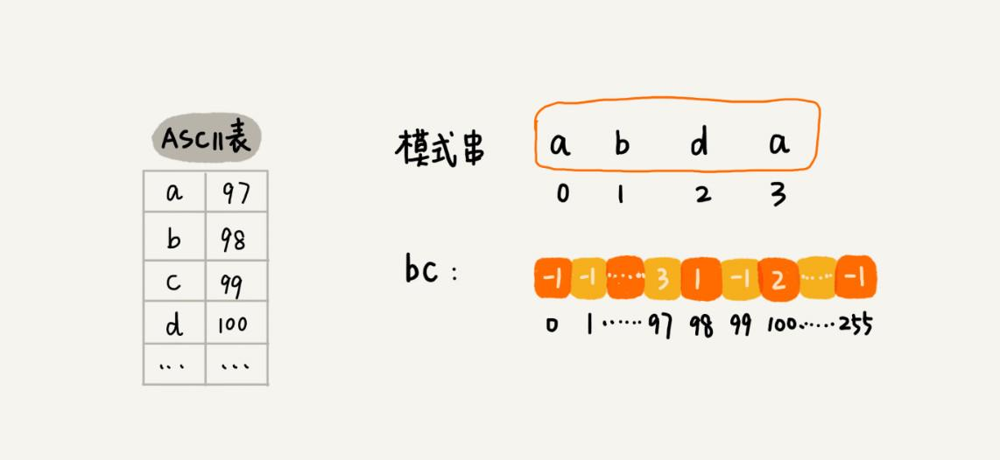
如果将上面的过程翻译成代码，就是下面这个样子。其中，变量
b 是模式串，m 是模式串的长度，bc 表示刚刚讲的散列表。
1 | private static final int SIZE = 256; // 全局变量或成员变量 |
掌握了坏字符规则之后，先把 BM 算法代码的大框架写好，先不考虑好后缀规则，仅用坏字符规则，并且不考虑 si-xi 计算得到的移动位数可能会出现负数的情况。
1 | public int bm(char[] a, int n, char[] b, int m) { |
为了方便理解，下面有一张图，将其中的一些关键变量标注在上面了，结合着图，代码应该更好理解。
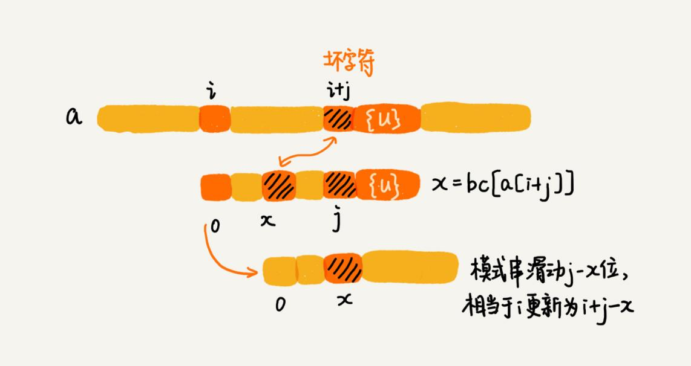
至此，已经实现了包含坏字符规则的框架代码，只剩下往框架代码中填充好后缀规则了。现在，就来看看，如何实现好后缀规则。它的实现要比坏字符规则复杂一些。
先简单回顾一下，前面讲过好后缀的处理规则中最核心的内容：
在模式串中，查找跟好后缀匹配的另一个子串；
在好后缀的后缀子串中，查找最长的、能跟模式串前缀子串匹配的后缀子串；
在不考虑效率的情况下，这两个操作都可以用很“暴力”的匹配查找方式解决。但是，如果想要 BM 算法的效率很高，这部分就不能太低效。如何来做呢？
因为好后缀也是模式串本身的后缀子串，所以，可以在模式串和主串正式匹配之前，通过预处理模式串，预先计算好模式串的每个后缀子串，对应的另一个可匹配子串的位置。这个预处理过程比较有技巧，很不好懂，应该是这篇文章最难懂的内容了，要认真多读几遍。
先来看看，如何表示模式串中不同的后缀子串呢？因为后缀子串的最后一个字符的位置是固定的，下标为 m-1，只需要记录长度就可以了。通过长度，可以确定一个唯一的后缀子串。
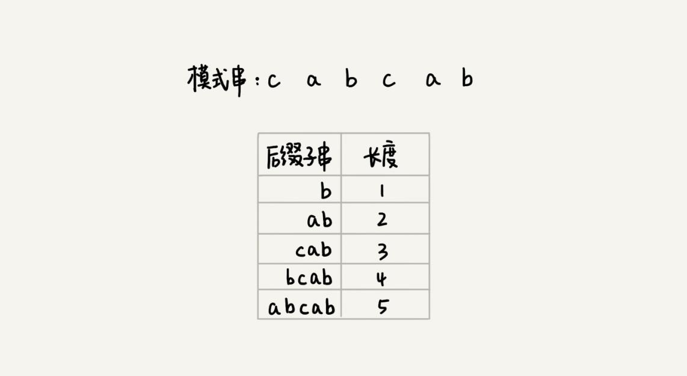
现在，要引入最关键的变量
suffix 数组。suffix 数组的下标 k，表示后缀子串的长度，下标对应的数组值存储的是，在模式串中跟好后缀{u}相匹配的子串{u*}的起始下标值。这句话不好理解，举一个例子。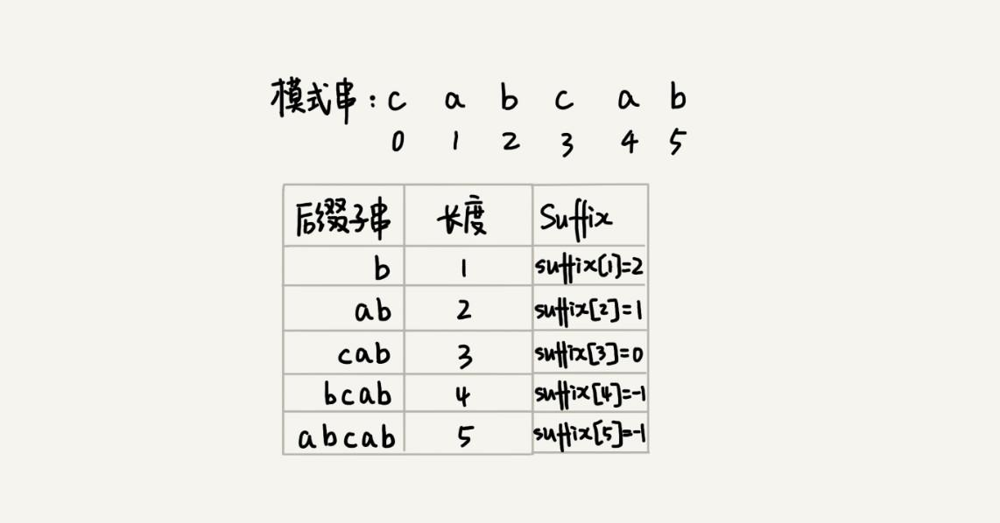
但是，如果模式串中有多个（大于
1 个）子串跟后缀子串{u}匹配，那 suffix 数组中该存储哪一个子串的起始位置呢？为了避免模式串往后滑动得过头了，肯定要存储模式串中最靠后的那个子串的起始位置，也就是下标最大的那个子串的起始位置。不过，这样处理就足够了吗？
实际上，仅仅是选最靠后的子串片段来存储是不够的。再回忆一下好后缀规则。
不仅要在模式串中，查找跟好后缀匹配的另一个子串，还要在好后缀的后缀子串中，查找最长的能跟模式串前缀子串匹配的后缀子串。
如果只记录刚刚定义的 suffix，实际上，只能处理规则的前半部分，也就是，在模式串中，查找跟好后缀匹配的另一个子串。所以，除了 suffix 数组之外，还需要另外一个 boolean 类型的 prefix 数组，来记录模式串的后缀子串是否能匹配模式串的前缀子串。
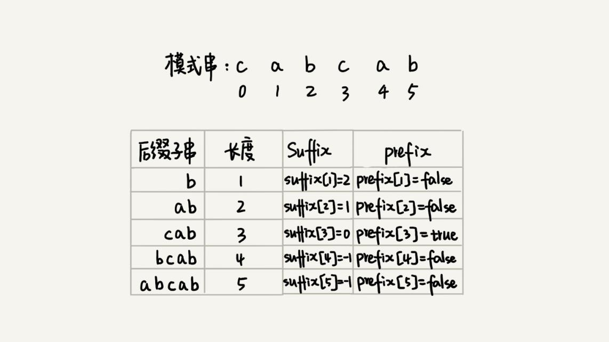
现在来看下，如何来计算并填充这两个数组的值？这个计算过程非常巧妙。
拿下标从 0 到 i 的子串（i 可以是 0 到 m-2）与整个模式串，求公共后缀子串。如果公共后缀子串的长度是 k，那就记录 suffix[k]=j（j 表示公共后缀子串的起始下标）。如果 j 等于 0，也就是说，公共后缀子串也是模式串的前缀子串，就记录 prefix[k]=true。
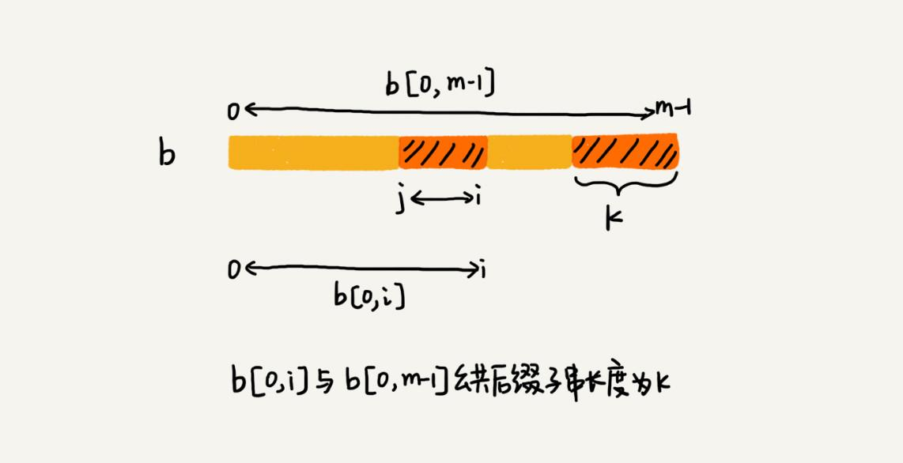
把
suffix 数组和 prefix 数组的计算过程，用代码实现出来，就是下面这个样子：
1 | // b 表示模式串，m 表示长度，suffix，prefix 数组事先申请好了 |
有了这两个数组之后，现在来看，在模式串跟主串匹配的过程中，遇到不能匹配的字符时，如何根据好后缀规则，计算模式串往后滑动的位数？
假设好后缀的长度是 k。先拿好后缀，在 suffix 数组中查找其匹配的子串。如果 suffix[k] 不等于 -1（-1 表示不存在匹配的子串），那就将模式串往后移动 j-suffix[k]+1 位（j 表示坏字符对应的模式串中的字符下标）。如果 suffix[k] 等于 -1，表示模式串中不存在另一个跟好后缀匹配的子串片段。可以用下面这条规则来处理。
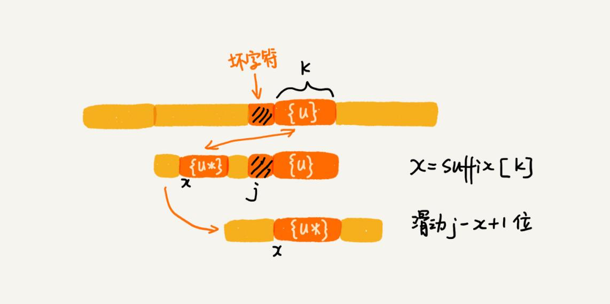
好后缀的后缀子串
b[r, m-1]（其中，r 取值从 j+2 到 m-1）的长度 k=m-r，如果 prefix[k] 等于 true，表示长度为 k 的后缀子串，有可匹配的前缀子串，这样可以把模式串后移 r 位。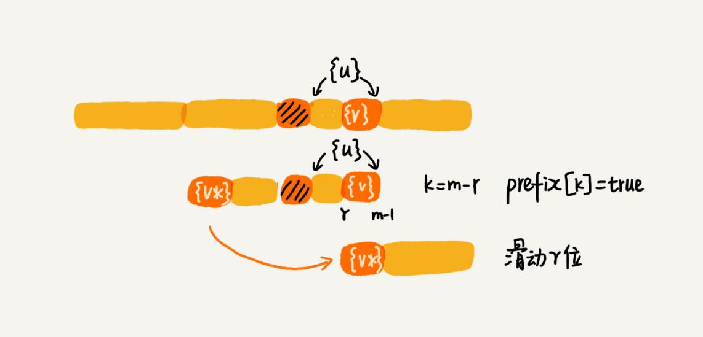
如果两条规则都没有找到可以匹配好后缀及其后缀子串的子串，就将整个模式串后移
m 位。至此，好后缀规则的代码实现也讲完了。把好后缀规则加到前面的代码框架里，就可以得到
BM 算法的完整版代码实现。
1 | // a,b 表示主串和模式串；n，m 表示主串和模式串的长度。 |
BM 算法的性能分析及优化
先来分析 BM 算法的内存消耗。整个算法用到了额外的 3 个数组，其中 bc 数组的大小跟字符集大小有关，suffix 数组和 prefix 数组的大小跟模式串长度 m 有关。
如果处理字符集很大的字符串匹配问题，bc 数组对内存的消耗就会比较多。因为好后缀和坏字符规则是独立的，如果运行的环境对内存要求苛刻，可以只使用好后缀规则，不使用坏字符规则，这样就可以避免 bc 数组过多的内存消耗。不过，单纯使用好后缀规则的 BM 算法效率就会下降一些了。
对于执行效率来说，可以先从时间复杂度的角度来分析。
实际上，前面讲的 BM 算法是个初级版本。为了更容易理解，有些复杂的优化这里没有讲。基于目前的这个版本，在极端情况下，预处理计算 suffix 数组、prefix 数组的性能会比较差。
比如模式串是 aaaaaaa 这种包含很多重复的字符的模式串，预处理的时间复杂度就是 $O(m^2)$。当然，大部分情况下，时间复杂度不会这么差。关于如何优化这种极端情况下的时间复杂度退化，如果感兴趣，可以自己研究一下。
总结
BM 算法。尽管复杂、难懂，但匹配的效率却很高，在实际的软件开发中，特别是一些文本编辑器中，应用比较多。如果一遍看不懂的话，就多看几遍。
BM 算法核心思想是，利用模式串本身的特点，在模式串中某个字符与主串不能匹配的时候，将模式串往后多滑动几位，以此来减少不必要的字符比较，提高匹配的效率。BM 算法构建的规则有两类，坏字符规则和好后缀规则。好后缀规则可以独立于坏字符规则使用。因为坏字符规则的实现比较耗内存，为了节省内存，可以只用好后缀规则来实现 BM 算法。
思考
你熟悉的编程语言中的查找函数，或者工具、软件中的查找功能，都是用了哪种字符串匹配算法呢？欢迎留言和我分享.


评论加载中